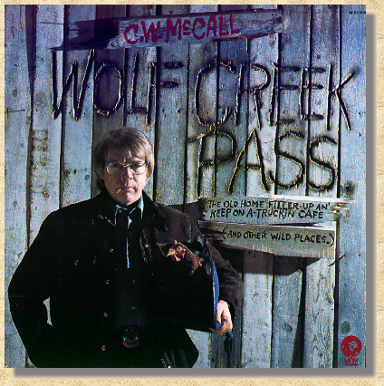

|
 Wolf Creek Pass Side One Wolf Creek Pass* + Night Rider Classified Old Thirty** + I've Trucked All Over This Land Side Two Four Wheel Drive Rocky Mountain September Old Home Filler-Up An' Keep On A-Truckin' Café* + Sloan* + Glenwood Canyon |
|
Wolf Creek Pass C. W. McCall
Produced by Don Sears, Chip Davis Arranged by Chip Davis All songs written by Bill Fries, Chip Davis Published by American Gramaphone SESAC *Terry Waddell/Drums, *Curtis McPeak/Banjo, *Larry Morton/Guitar, *Chuck Sanders/Bass, Ron Steele/12-String, 6-String Electric, Bobbie Thomas/Banjo, Jackson Berkey/Keyboards, Bill Berg/Drums, Eric Hansen/Bass, **Ron Agnew/Guitar, **Gregg Fox/12-String, **Chip Davis/Drums, Strings/Kansas City Engineered by Ron Ubel, Carol Rogers, Liz Westphalen (The Puffys)/Vocals, Steve Kline/Photography. Recorded & Mastered at Sound recorders, Inc. Omaha, Nebraska Engineered by Don Sears Album Design, Bill Fries, Don Sears Special thanks to Dick Solowicz for the chicken, Mike Post (as in fence post)Glen Glenda Rena Jerry and Ron for the inspiration and to whoever owned the old building behind the car wash for the lumber_______________Yeah we did. (P) 1975 MGM Records, Inc. (P) 1974 MGM Records, Inc., except + (c) 1975 MGM Records, Inc./All Rights Reserved/Printed in U.S.A. Manufactured by MGM Records, Inc., 7165 Sunset Boulevard, Hollywood, California 90046 |

This Web page is hosted by: Mark L. Evans
Written and maintained by: Miles A. Lumbard
Send Comments to:Miles A. Lumbard